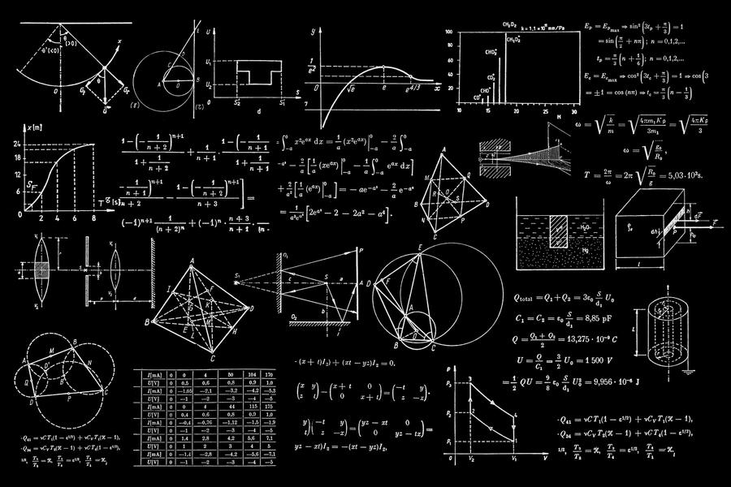

Integrante 01
Nombre del integrante
Rol en el equipo
Escuela Politécnica de Guadalajara
Proyecto integrador del grupo 1A, turno matutino, del Tecnólogo en Sistemas Informáticos. Reunimos las diez materias del ciclo 2026B con sus unidades y temas para consultarlas en un solo lugar.
tsin1am@poli:~/1A$ ls materias/
tutoria tecnologias sexualidad
algoritmos ingles historia numerica
lectoescritura fisica socioemocional
tsin1am@poli:~/1A$ grep -c "tema" temario.txt
230
tsin1am@poli:~/1A$ ./semestre --progreso
semana 15 de 18
tsin1am@poli:~/1A$
Ciclo 2026B · 10 materias
Cada materia tiene su propia página con unidades, ejes temáticos y temas. Filtra por área o entra directo a la que buscas.
Integración grupal, reglamentos, SIIAU y estrategias para permanecer y aprender mejor en el bachillerato.
Sistema operativo, archivos, ofimática y ciudadanía digital para trabajar con orden y seguridad.
Sexualidad humana, igualdad de género, salud sexual y reproductiva, y decisiones informadas.
Datos, variables y operadores; pseudocódigo, diagramas de flujo, estructuras de control y C.
Presentaciones personales, verb to be, pronombres, demostrativos y rutinas en presente simple.

De la Real Universidad de 1792 a la Red Universitaria: historia, misión y ser universitario.

Números reales, proporciones y porcentajes, álgebra básica y razonamiento lógico-matemático.
Comprensión lectora, ortografía, redacción de textos y expresión oral frente a grupo.

Medición, movimiento y fuerzas, electricidad y magnetismo, sonido y luz en 18 semanas.

Autoconocimiento, autorregulación, empatía, colaboración y un proyecto de vida con metas claras.
Calendario del ciclo 2026B
Semana 15 · 23 – 27 nov. En Física toca: 4.1 Definición y propagación del sonido. Faltan 3 semanas para el cierre del ciclo.

Sobre el proyecto
Este sitio es nuestro proyecto integrador. Organiza el temario de cada materia del primer semestre para consultarlo rápido, repasar antes de un examen y saber qué tema viene después.
Equipo · 1A Matutino
Pasa el cursor o toca una tarjeta para ver los datos de cada integrante.
Rol en el equipo
Rol en el equipo
Rol en el equipo
Rol en el equipo
Rol en el equipo
Rol en el equipo
Rol en el equipo
Rol en el equipo